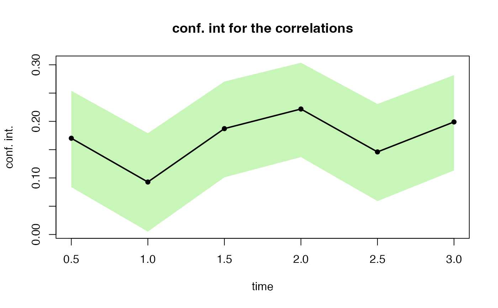

This function performs correlation tests for the shocks generated by simshocks.
esgcortest( x, alternative = c("two.sided", "less", "greater"), method = c("pearson", "kendall", "spearman"), conf.level = 0.95 )
Arguments
| x | gaussian (bivariate) shocks, with correlation, generated by |
|---|---|
| alternative | indicates the alternative hypothesis and must be one of "two.sided", "greater" or "less". |
| method | which correlation coefficient is to be used for the test : "pearson", "kendall", or "spearman". |
| conf.level | confidence level. |
Value
a list with 2 components : estimated correlation coefficients, and confidence intervals for the estimated correlations.
References
D. J. Best & D. E. Roberts (1975), Algorithm AS 89: The Upper Tail Probabilities of Spearman's rho. Applied Statistics, 24, 377-379.
Myles Hollander & Douglas A. Wolfe (1973), Nonparametric Statistical Methods. New York: John Wiley & Sons. Pages 185-194 (Kendall and Spearman tests).
See also
Author
T. Moudiki + stats package
Examples
nb <- 500 s0.par1 <- simshocks(n = nb, horizon = 3, frequency = "semi", family = 1, par = 0.2) s0.par2 <- simshocks(n = nb, horizon = 3, frequency = "semi", family = 1, par = 0.8) (test1 <- esgcortest(s0.par1))#> $cor.estimate #> Time Series: #> Start = c(0, 2) #> End = c(3, 1) #> Frequency = 2 #> [1] 0.17019209 0.09279227 0.18718789 0.22185835 0.14601034 0.19899949 #> #> $conf.int #> Time Series: #> Start = c(0, 2) #> End = c(3, 1) #> Frequency = 2 #> Series 1 Series 2 #> 0.5 0.083751429 0.2540906 #> 1.0 0.005143531 0.1790261 #> 1.5 0.101157771 0.2704393 #> 2.0 0.136829774 0.3036416 #> 2.5 0.059076143 0.2307465 #> 3.0 0.113285783 0.2817730 #>(test2 <- esgcortest(s0.par2))#> $cor.estimate #> Time Series: #> Start = c(0, 2) #> End = c(3, 1) #> Frequency = 2 #> [1] 0.7879729 0.7823533 0.8043743 0.7921554 0.7786005 0.8077114 #> #> $conf.int #> Time Series: #> Start = c(0, 2) #> End = c(3, 1) #> Frequency = 2 #> Series 1 Series 2 #> 0.5 0.7522620 0.8190677 #> 1.0 0.7458304 0.8141866 #> 1.5 0.7710721 0.8332881 #> 2.0 0.7570532 0.8226977 #> 2.5 0.7415392 0.8109245 #> 3.0 0.7749064 0.8361767 #>esgplotbands(test2)